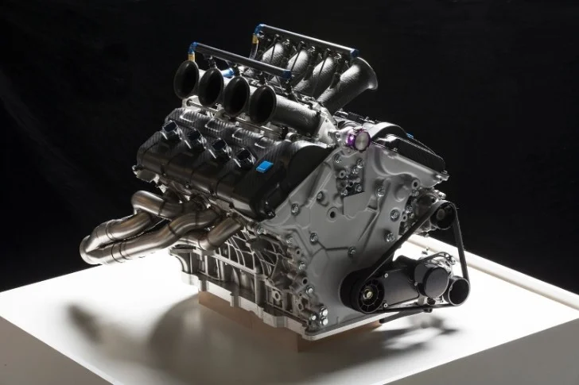

Engine: Internal Combustion
The internal combustion engine (ICE) is a type of engine that burns fuel and air inside the engine cylinders, creating a high-pressure force that drives the pistons. This process occurs in four basic stages—Intake, Compression, Power, and Exhaust—across the Otto cycle (for gasoline) or Diesel cycle (for diesel engines). These engines power most vehicles worldwide, converting chemical energy into mechanical energy to propel the vehicle.
Mechanical Process
- Intake: The intake valve opens, and the piston moves down, drawing a mixture of air and fuel into the combustion chamber.
- Compression: The intake valve closes, and the piston moves up, compressing the air-fuel mixture. The compression increases the temperature and pressure of the mixture.
- Combustion: A spark from the spark plug ignites the compressed mixture, causing a small explosion that forces the piston downward. This provides the mechanical force that powers the engine.
- Exhaust: The exhaust valve opens, and the piston moves up again to expel the combustion gases out of the cylinder through the exhaust valve.
Core Components
- Pistons: Metal components that move up and down within the engine cylinder, converting the pressure from combustion into mechanical energy.
- Crankshaft: A rotating shaft that is connected to the pistons. It converts the linear motion of the pistons into rotational motion, which drives the vehicle’s wheels.
- Camshaft: A shaft that controls the opening and closing of the intake and exhaust valves, ensuring that the engine operates efficiently and at the right time.
- Spark Plug: In gasoline engines, the spark plug ignites the air-fuel mixture at the correct time during the compression stroke, causing combustion.